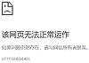

工作日志
Q: div之间有间隔，单单消除padding和margin有时消除不掉
Q: 为什么gif图放一段时间不动了，本地文件也不动了，重新更新了一次。
Q: 背景图片的显示
A: 使用绝对路径,以及background属性。
Q: PHP_EOL和"\n"为何实际运行不换行？而"
"可以。
"可以。
A: 有换行的属性，但是页面是html所以没有换行。
Q: 服务器如果远程下载GitHub的内容，会生成一个git文件，那如何自动部署呢？
A: 自动部署指的不是远程下载，而是在服务器安装git后，与github进行密钥配对，再用钩子进行连接就好了。
Q: 异步提交是啥?当前页面提交怎么办到?
Q: warning:本地提交表单时出现的错误：

（服务器里可以正确提交），如何解决？A: php环境没有弄对，或者文件(项目)没有放在www目录下。
Q: 咱的图片加载不出来啊！！！提交到服务器可以，那在本地呢？
A: 使用链接进行显示。
Q: 如何用相对路径显示照片呢？
A: 有"../"是父系路径
A: 有"./"或者"不写"就是相对路径
A: 有"/"是绝对路径
前端的绝对路径相对于服务器的根目录
后端的绝对路径相对于盘符根目录。
实例：表单
一些注意点
- 复选框的选项支持全局设置。比如我设置的字体,它还活着。
- CSS优先级顺序：近的高。
- 一个汉字占三个字符位置。
- div根据自身模块大小进行变动，一个是水平变动，一个是垂直变动。transform:translate(-50%,0);（还不太懂，不敢乱用）
- hexo博客部署命令：hexo clean, hexo generate, hexo deploy. 前两个加hexo server是本地运行博客。
- text-decoration 文本装饰，可用于去除下划线。
- calc的运算符两端要加空格
- opacity透明度